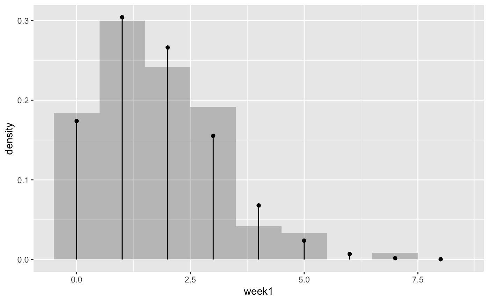
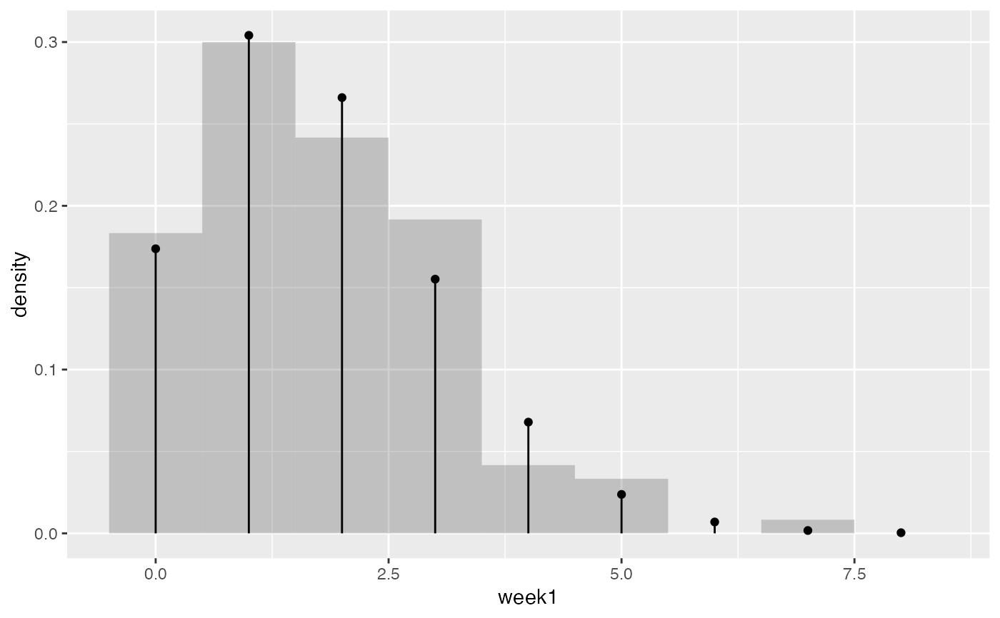

This data frame gives the number of fumbles by each NCAA FBS team for the first three weeks in November, 2010.
Format
A data frame with 120 observations on the following 7 variables.
team NCAA football team
rank rank based on fumbles per game through games on November 26, 2010
W number of wins through games on November 26, 2010
L number of losses through games on November 26, 2010
week1 number of fumbles on November 6, 2010
week2 number of fumbles on November 13, 2010
week3 number of fumbles on November 20, 2010
Source
http://www.teamrankings.com/college-football/stat/fumbles-per-game
Details
The fumble counts listed here are total fumbles, not fumbles lost. Some of these fumbles were recovered by the team that fumbled.
Examples
data(Fumbles)#> Warning: data set ‘Fumbles’ not foundm <- max(Fumbles$week1) table(factor(Fumbles$week1,levels = 0:m))#> #> 0 1 2 3 4 5 6 7 #> 22 36 29 23 5 4 0 1favstats( ~ week1, data = Fumbles)#> min Q1 median Q3 max mean sd n missing #> 0 1 2 3 7 1.75 1.361228 120 0# compare with Poisson distribution cbind( fumbles = 0:m, observedCount = table(factor(Fumbles$week1,levels = 0:m)), modelCount= 120* dpois(0:m,mean(Fumbles$week1)), observedPct = table(factor(Fumbles$week1,levels = 0:m))/120, modelPct= dpois(0:m,mean(Fumbles$week1)) ) %>% signif(3)#> fumbles observedCount modelCount observedPct modelPct #> 0 0 22 20.900 0.18300 0.17400 #> 1 1 36 36.500 0.30000 0.30400 #> 2 2 29 31.900 0.24200 0.26600 #> 3 3 23 18.600 0.19200 0.15500 #> 4 4 5 8.150 0.04170 0.06790 #> 5 5 4 2.850 0.03330 0.02380 #> 6 6 0 0.832 0.00000 0.00693 #> 7 7 1 0.208 0.00833 0.00173showFumbles <- function(x, lambda = mean(x),...) { result <- gf_dhistogram( ~ week1, data = Fumbles, binwidth = 1, alpha = 0.3) %>% gf_dist("pois", lambda = mean( ~ week1, data = Fumbles) ) print(result) return(result) } showFumbles(Fumbles$week1)showFumbles(Fumbles$week2)showFumbles(Fumbles$week3)